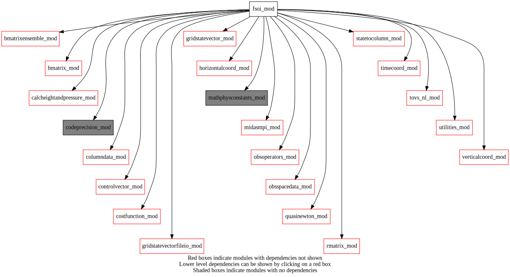
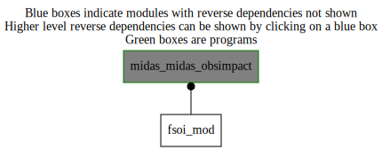

Dependency Diagrams:
 Direct Dependency Diagram¶
 Reverse Dependency Diagram¶
Description
MODULE fsoi_mod (prefix=’fso’ category=’1. High-level functionality’)
- Purpose
Observation impact (FSOI) library
Quick access
- Routines
calcfcsterror(),fso_ensemble(),fso_setup(),minimize(),multenergynorm(),sumfso()Needed modules
midasmpi_mod: MODULE midasMpi_mod (prefix=’mmpi’ category=’8. Low-level utilities and constants’)
codeprecision_mod: MODULE codePrecision_mod (prefix=’pre’ category=’8. Low-level utilities and constants’)
horizontalcoord_mod: MODULE HorizontalCoord_mod (prefix=’hco’ category=’7. Low-level data objects’)
verticalcoord_mod: MODULE verticalcoord (prefix=’vco’ category=’7. Low-level data objects’)
obsspacedata_mod: MODULE obsSpaceData_mod (prefix=’obs’ category=’6. High-level data objects’)
gridstatevector_mod: MODULE gridStateVector_mod (prefix=’gsv’ category=’6. High-level data objects’)
gridstatevectorfileio_mod: MODULE gridStateVectorFile_mod (prefix=’gio’ category=’4. Data Object transformations’)
columndata_mod: MODULE columnData_mod (prefix=’col’ category=’6. High-level data objects’)
controlvector_mod: MODULE controlVector_mod (prefix=’cvm’ category=’6. High-level data objects’)
bmatrix_mod: MODULE BMatrix_mod (prefix=’bmat’ category=’2. B and R matrices’)
bmatrixensemble_mod: MODULE BmatrixEnsemble_mod (prefix=’ben’ category=’2. B and R matrices’)
statetocolumn_mod: MODULE stateToColumn (prefix=’s2c’ category=’4. Data Object transformations’)
obsoperators_mod: MODULE obsOperators_mod (prefix=’oop’ category=’5. Observation operators’)
rmatrix_mod: MODULE rMatrix_mod (prefix=’rmat’ category=’2. B and R matrices’)
mathphysconstants_mod: MODULE MathPhysConstants_mod (prefix=’mpc’ category=’8. Low-level utilities and constants’)
quasinewton_mod: MODULE quasinewton_mod (prefix=’qna’ category=’1. High-level functionality’)
costfunction_mod: MODULE costfunction_mod, (prefix=”cfn” category=’5. Observation operators’)
tovs_nl_mod: MODULE tovs_nl (prefix=’tvs’ category=’5. Observation operators’)
timecoord_mod: MODULE timeCoord (prefix=’tim’ category=’7. Low-level data objects’)
utilities_mod: MODULE utilities_mod (prefix=’utl’ category=’8. Low-level utilities and constants’)
calcheightandpressure_mod: MODULE czp_calcHeightAndPressure (prefix=’czp’ category=’4. Data Object transformations’)
rttov_const(inst_name(),platform_name())Variables
Subroutines and functions
- subroutine fsoi_mod/fso_setup(hco_anl_in)¶
- Purpose
Initialise the FSOI module: read the namelist and initialise global variables and structure
- Arguments
hco_anl_in [struct_hco ,in,pointer]
- Called from
- Call to
- subroutine fsoi_mod/fso_ensemble(columntrlonanlinclev, obsspacedata)¶
- Purpose
Perform forecast sensitivity to observation calculation using ensemble approach
- Arguments
columntrlonanlinclev [struct_columndata ,in,target]
obsspacedata [struct_obs ,inout,target]
- Called from
- Call to
col_getvco(),col_setvco(),col_allocate(),col_getnumcol(),tim_getdatestamp(),gsv_allocate(),calcfcsterror(),bmat_sqrtbt(),minimize(),bmat_sqrtb(),s2c_tl(),oop_htl(),rmat_rsqrtinverseallobs(),obs_numheader(),obs_headelem_i(),obs_bodyelem_i(),obs_bodyelem_r(),sumfso(),col_deallocate()
- subroutine fsoi_mod/calcfcsterror(columntrlonanlinclev, statevector_out, statevector_verifanalysis)¶
- Purpose
Reads the forecast from background and analysis, the verifying analysis based on these inputs, calculates the Forecast error
- Arguments
columntrlonanlinclev [struct_columndata ,in,target]
statevector_out [struct_gsv ,inout,target]
statevector_verifanalysis [struct_gsv ,inout,target]
- Called from
- Call to
col_getvco(),tim_getdatestamp(),gsv_allocate(),gio_readfromfile(),gsv_add(),gsv_copy(),multenergynorm()
- subroutine fsoi_mod/minimize(nvadim, zhat, column, columntrlonanlinclev, obsspacedata)¶
- Purpose
Performs HFSO quasi-Newton minimization
- Arguments
nvadim [integer ,in]
zhat (nvadim) [real ,out]
column [struct_columndata ,in,target]
columntrlonanlinclev [struct_columndata ,in,target]
obsspacedata [struct_obs ,in,target]
- Called from
- Call to
utl_tmg_start(),simvar(),utl_tmg_stop(),prscal(),qna_n1qn3()
- subroutine fsoi_mod/sumfso(obsspacedata)¶
- Purpose
Print out the information of total FSO for each family
- Arguments
obsspacedata [struct_obs ,in]
- Called from
- Call to
obs_numbody(),obs_bodyelem_r(),obs_bodyelem_i(),obs_getfamily(),obs_headelem_i(),mmpi_allreduce_sumreal8scalar()
- subroutine fsoi_mod/simvar(indic, nvadim, zhat, jtotal, gradj)¶
- Purpose
Implement the Variational solver as described in Courtier, 1997, Dual formulation of four-dimentional variational assimilation, Q.J.R., pp2449-2461.
- Arguments
- indic
Value of indic Note: 1 and 4 are reserved values for call back from m1qn3. For direct calls use other value than 1 and 4. =1 No action taken; =4 Both J(u) and its gradient are computed. =2 Same as 4 (compute J and gradJ) but do not interrupt timer of the minimizer. =3 Compute Jo and gradJo only.
- nvadim
Dimension of the control vector in forecast error covariances space
- zhat
Control variable in forecast error covariances space
- Jtotal
Cost function of the Variational algorithm
- gradJ
Gradient of the Variational Cost funtion
- Arguments
indic [integer ,in]
nvadim [integer ,in,]
zhat (nvadim) [real ,inout]
jtotal [real ,out]
gradj (nvadim) [real ,out]
- Call to
utl_tmg_stop(),mmpi_allreduce_sumreal8scalar(),col_getvco(),gsv_allocate(),bmat_sqrtb(),s2c_tl(),utl_tmg_start(),oop_htl(),rmat_rsqrtinverseallobs(),cfn_calcjo(),cfn_sumjo(),col_zero(),oop_had(),s2c_ad(),bmat_sqrtbt(),gsv_deallocate()
- subroutine fsoi_mod/prscal(kdim, px, py, ddsc)¶
- Purpose
evaluation of the inner product in canonical space used in the minimization
- Arguments
kdim [integer ,in,]
px (kdim) [real ,in]
py (kdim) [real ,in]
ddsc [real ,out]
- Call to
- subroutine fsoi_mod/dcanab(kdim, py, px)¶
- Purpose
Change of variable associated with the canonical inner product to compute PX = L^-1 * Py with L related to the inner product <PX,PY> = PX^t L^t L PY (see the modulopt documentation aboutn DTCAB) Double precision version based on single precision CTCAB. Refered to as dummy argument DTCAB by N1QN3 minimization package.
- Arguments
kdim [integer ,in,]
py (kdim) [real ,in]
px (kdim) [real ,inout]
- subroutine fsoi_mod/dcanonb(kdim, px, py)¶
- Purpose
Change of variable associated with the canonical inner product to compute PY = L * PX with L related to the inner product <PX,PY> = PX^t L^t L PY (see the modulopt documentation about DTONB) Double precision version based on single precision CTCAB. Refered to as dummy argument DTCAB by N1QN3 minimization package.
- Arguments
kdim [integer ,in,]
px (kdim) [real ,in]
py (kdim) [real ,inout]
- subroutine fsoi_mod/multenergynorm(statevector_inout, statevector_ref, latmin, latmax, lonmin, lonmax, uvnorm, ttnorm, p0norm, hunorm, tgnorm)¶
- Purpose
Computes energy norms For some positive definite symmetric matrix defining the energy,
total energy = x^T * C * x
- Arguments
statevector_inout [struct_gsv ,inout] :: C * statevector_inout (Buehner, Du and Bedard, 2018)
statevector_ref [struct_gsv ,in]
latmin [real ,in]
latmax [real ,in]
lonmin [real ,in]
lonmax [real ,in]
uvnorm [logical ,in]
ttnorm [logical ,in]
p0norm [logical ,in]
hunorm [logical ,in]
tgnorm [logical ,in]
- Called from
- Call to
gsv_isallocated(),utl_abort(),gsv_getnumlev(),mmpi_allreduce_sumreal8scalar()
{kind=link}
{kind=link}